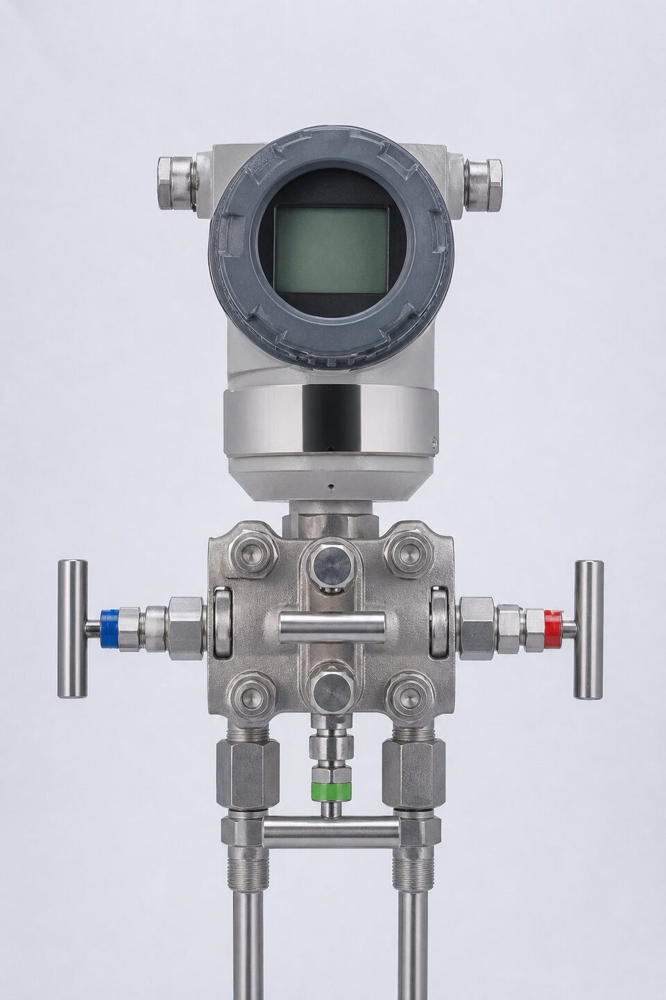

ترانسمیتر DP چیست؟
ترانسمیتر اختلاف فشار، تفاوت فشار بین دو ورودی (High و Low) را اندازه میگیرد و به سیگنال استاندارد تبدیل میکند. انعطافپذیری آن باعث شده در سه کاربرد اصلی — فشار، سطح و جریان — به پرکاربردترین ابزار فرآیندی تبدیل شود.
اندازهگیری سطح
در مخازن، فشار هیدرواستاتیک در پایین مخزن با ارتفاع مایع رابطه مستقیم دارد. ترانسمیتر DP با اندازهگیری این فشار و کسر فشار بالای مایع، سطح را محاسبه میکند. در مخازن بسته با فاز بخار، ورودی Low به بالای مخزن متصل میشود تا اثر فشار بخار حذف شود.
اندازهگیری جریان
با نصب المان اولیه مانند اوریفیس، ونتوری یا نازل در خط، افت فشار ایجاد میشود که متناسب با مجذور دبی است:
ترانسمیتر DP افت فشار را اندازه میگیرد و با جذرگیری، دبی محاسبه میشود. برای گاز و بخار، جبران دما و فشار برای تصحیح چگالی ضروری است.
نکات نصب و کالیبراسیون
- لولههای ایمپالس را کوتاه و بدون زانوهای غیرضروری اجرا کنید.
- برای مایع، هواگیری و برای گاز، میعانگیری را انجام دهید.
- ترانسمیتر را نزدیک نقطه اندازهگیری و همدما نصب کنید.
- صفر و رنج را با منبع فشار مرجع کالیبره کنید.
انتخاب رنج و کاربردهای پیشرفته
انتخاب صحیح رنج ترانسمیتر DP برای دقت اندازهگیری حیاتی است؛ رنج بیش از حد بالا تفکیکپذیری را کاهش میدهد و رنج خیلی کم ممکن است به اشباع منجر شود. رنج باید نزدیک به محدودهٔ واقعی فرآیند و با حاشیهٔ ایمنی مناسب انتخاب شود.
- رنج را بر اساس حداکثر و حداقل واقعی فرآیند تعیین کنید.
- در اندازهگیری جریان، ریشهٔ مجذور و برش پایین (Low Cut) را تنظیم کنید.
- برای سرویس خلأ و فشار منفی، قابلیت سرویس خلأ را بررسی کنید.
- خروجی HART را برای عیبیابی از راه دور فعال کنید.
این ترانسمیتر با نصب صحیح و نگهداری مناسب، سالها اندازهگیری پایدار و قابل اعتماد ارائه میدهد.
جمعبندی
ترانسمیتر DP ابزاری چندکاره و مقرونبهصرفه است. برای استعلام ترانسمیتر و تجهیزات اندازهگیری، صفحهٔ تامین تجهیزات ابزار دقیق را ببینید.
سوالات رایج
ترانسمیتر اختلاف فشار چگونه سطح را اندازه میگیرد؟
با اندازهگیری فشار هیدرواستاتیک ستون مایع بین دو نقطه، اختلاف فشار متناسب با ارتفاع سطح محاسبه میشود و در مخازن باز و بسته کاربرد دارد.
اندازهگیری جریان با DP چگونه است؟
با نصب المان اولیه مانند اوریفیس، افت فشار ایجادشده متناسب با مجذور دبی است؛ ترانسمیتر DP این افت فشار را اندازه میگیرد و دبی محاسبه میشود.
چرا جبران دما و فشار لازم است؟
در سیالات تراکمپذیر مانند گاز و بخار، چگالی با دما و فشار تغییر میکند؛ بدون جبران، دبی محاسبهشده خطای قابل توجهی خواهد داشت.
نصب ترانسمیتر DP چه الزامی دارد؟
لولههای ایمپالس باید کوتاه و همدما باشند، مسیر اتصال عاری از هوا (برای مایع) یا میعان (برای گاز) باشد و ترانسمیتر در ارتفاع مناسب نصب شود.
مطالب مرتبط
- ترانسمیتر فشار و راهنمای کامل آن
- فلومتر اوریفیس پلیت
- کالیبراسیون فلومتر و فواصل آن
- اندازهگیری سطح هیدرواستاتیک
- تامین تجهیزات ابزار دقیق — خدمات اختصاصی
برای استعلام ترانسمیتر DP، رنج فشار، دقت، پروتکل خروجی و نوع اتصال فرآیند را ثبت کنید تا قیمت و زمان تحویل اعلام شود.
مشاهده صفحه محصول ← ثبت RFQ همین محصولتامین این تجهیزات را به پیشرو تجهیز فرتاک بسپارید
شرکت پیشرو تجهیز فرتاک تامینکننده تخصصی تجهیزات صنعتی برای پروژههای نفت، گاز، پتروشیمی، فولاد و نیروگاهی است. برای دریافت پیشنهاد فنی و قیمت، استعلام (RFQ) خود را ثبت کنید تا کارشناسان مهندسی فروش در کوتاهترین زمان پاسخ دهند.
- تامین تجهیزات ابزار دقیقترانسمیتر، فلومتر و تجهیزات اندازهگیری
- تامینکننده تجهیزات ابزار دقیقترانسمیتر فشار و ابزار دقیق